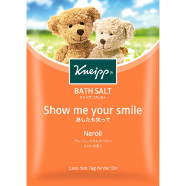

返回列表
产品名称：クナイプ バスソルト ネロリ

クナイプ・ジャパン クナイプ バスソルト ネロリ ５０ｇ
メーカー クナイプ・ジャパン
JANコード 4580294850759
商品の特徴
天然岩塩にネロリの精油を配合したバスソルトです。
やさしくてどこか懐かしい香りに包まれながら、晴れやかな楽園でリラックスするようなバスタイムを。
成分・分量
【成分】
塩化Ｎａ・香料・ビターオレンジ花油・オレンジ果皮油・パチョリ油・レモン果皮油・アーモンド油・ポリソルベート２０・ジプテリクスオドラタ種子エキス・グリセリン・水・トコフェロール・黄５・赤１０２
用法及び用量
【使用方法】
浴そうのお湯（約２００Ｌ）にバスソルト１包をよくかきまぜながら溶かして入浴してください。